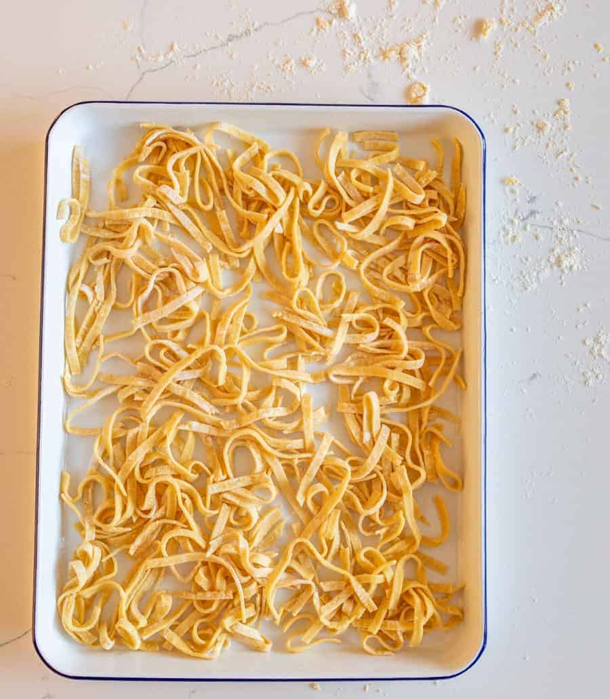

Homemade Noodles

Description
This is a dish that my mom made for most holidays featuring homemade egg noodles boiled in chicken broth. It was always a crowd pleaser and is not difficult to prepare and make.
Try this recipe out at your next family get together and your bound to have everyone begging for more!
Ingredients
- Twelve Eggs
- Secret Tip: Add only three whole eggs with nine egg yolks!
- 2 1/4 Cups of Flour
- Add one teaspoon of salt and one teaspoon of pepper
- 1/4 Stick of Butter
- Five 15oz Cans of Chicken Broth
Steps
- In a mixing glass add the eggs and mix until even before adding them to the flour.
- Mix well until the dough is roll-ready.
- Roll out the dough (dusting with flour as needed to prevent sticking) until flat and thin.
- Slice into noodles.
- In a large cookpot, add the cans of chicken broth and the butter bringing it to a boil.
- Add the cut noodles and boil for 5-10 minutes until cooked completely.
- Add salt and pepper to taste and serve immediately!
Return to Previous Page